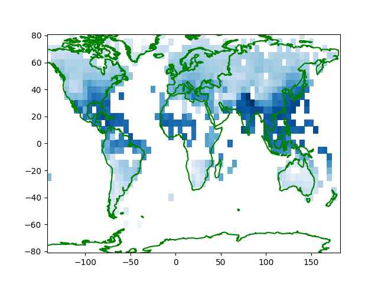
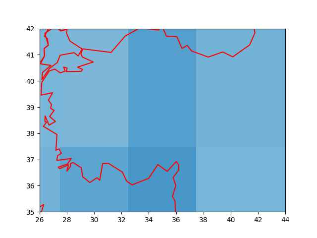
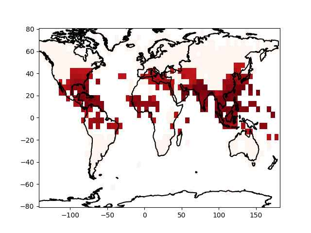
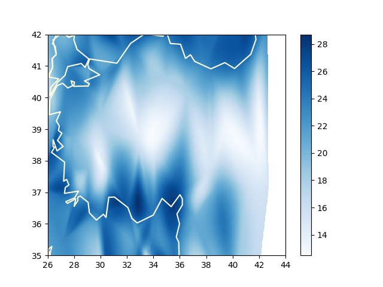

İklim, Nem Verileri
Havanın nemlilik oranı ay bazlı tarihsel olarak [1] ya da anlık olarak [2] bağlantısındaki metotlarla alınabilir.
Önce tarihsel verilere bakalım. [1]'den indirilebilecek bazı veriler
HadISDH.landq ile ya da .landRH ile baslayan dosyalar, bunlar
sırasıyla bir kg ıslak hava içinde ne kadar g bazında buhar olduğunu
gosteren g/kg birimindeki spesifik nemlilik q, ya da birim hacimdeki
buharın o sıcaklıkta tutulabilecek maksimum buhara olan yüzde olarak
oranını gosteren izafi nemlilik rh. Veri indirilip alttaki icindeki
hadisdh_process ile işlenebilir.
def hadisdh_process(infile,outfile):
fin = open(fin)
rd = csv.reader(fin)
fout = open(outfile,"w")
for i in range(47*12):
date_line = next(rd)
date_line = date_line[0].split(" ")
dt = date_line[1] + "-" + date_line[0]
dt = pd.to_datetime(dt)
for j in range(36):
print ('j',j)
line = next(rd)
line = line[0]
line = re.split('\s*',line)
line = line[1:]
line = [str(dt.year), str(dt.month)] + line
res = ";".join(line)
res = res.replace("-9999.99","")
fout.write(res)
fout.write("\n")
fout.flush()
fout.flush()
Okunan dosya formatı biraz garip, tarihler ay olarak bir blok üzerine düz tarih olarak yazılmış, ve dosyanın en sonunda her bloğun kolonlarının ve satırlarının tekabül ettiği enlem, boylam ızgara noktaları verilmiş. Biz Pandas gibi ürünlerle çalışmaya alışık olduğumuz için her satırda gerekli bilgiyi içeren normalize edilmiş verilerle iş yapmaya daha alışkınız, bizim ürettiğimiz çıktının formatında sene/ay bilgisi ayrı kolonlarda, ve her satırda veriliyor, tarih başlık değil ve en sondaki iki satır atlanıyor. Böylece sene/ay için filtreleme yapılınca gerekli veri bloğu alınır, dünyanın belli noktalarını temsil eden bu blok 72 x 36 boyutlu bir matris olacaktır. O matristeki hücrelerin hangi enlem/boylamlara tekabül ettiğini kod içine sabit değerler olarak gömebiliriz, veriye dahil etmeye gerek yok. Enlem değerleri -/+87.5 arasında eşit aralığa bölünmüş 36 satırda, boylam değerleri ise -+177.5 arasında 72 aralığa bölünmüş kolonlarda olacak.
Şimdi işlenmiş yeni verideki bir aya bakalım,
import util
year = 2019; month = 8
df = util.get_pd().read_csv('/tmp/q.csv',sep=';',header=None)
df = df[(df[0] == year) & (df[1] == month)]
df = df.iloc[:,2:]
x,y = np.meshgrid(np.linspace(-177.50,177.50,72),np.linspace(-87.50,87.50,36))
util.get_sm().plot_continents(0, 20, zoom=18, incolor='green', outcolor='white', fill=False)
plt.pcolormesh(x,y,df,cmap='Blues')
plt.savefig('iklim01.jpg',quality=40)

Fakat eldeki verininin pek detaylı olmadığını biliyoruz çünkü 72 x 36 boyutlu bir ızgara pek çok alanı atlamış olacaktır. Mesela TR üzerinde odaklanırsak,
year,month = 2019,8
df = util.get_pd().read_csv('/tmp/q.csv',sep=';',header=None)
df = df[(df[0] == year) & (df[1] == month)]
x,y = np.meshgrid(np.linspace(-177.50,177.50,72),np.linspace(-87.50,87.50,36))
df = df.iloc[:,2:]
df = np.array(df).flatten()
xx = x.flatten()[np.isnan(df)==False]
yy = y.flatten()[np.isnan(df)==False]
zz = df[np.isnan(df)==False]
q = util.get_qti()(xx,yy,zz)
interp = np.vectorize(q.interpolate,otypes=[np.float64])
zi = interp(x, y)
util.get_sm().plot_continents(40, 35, zoom=1, incolor='red', outcolor='white', fill=False)
plt.xlim(26,44)
plt.ylim(35,42)
plt.pcolormesh(y,x,zi,cmap='Blues')
plt.savefig('iklim02.jpg',quality=40)

Islak Termometre Sıcaklığı (Wet-Bulb Temperature)
Çok yüksek derecedeki bazı sıcaklıkların mesela çöl ortamında bile nispeten dayanilabilir olduğunu biliyoruz, daha düşük sıcaklık farklı yerlerde dayanilmaz olabiliyor. Sebep nedir? Çöl ortamındaki kuru iklim (nem azlığı) burada rol oynamakta. Diğer yerlerde daha düşük sıcaklıkta yüksek nem etkili oluyor, insan bedeni yüksek sıcakta ter atarak serinler, fakat yüksek nemli ortamda bu atış işlemez olur (dışarıdaki hava içinde çok fazla sıvı var) ve bu sıcaklığın etkisini arttırır.
Sıcaklık ve nemi birleştirip tek bir ölçüt haline getiren bir hesap ıslak termometre sıcaklığı. Bu bize irdeleme açısından tek bir sayı veriyor, bilimsel makalelere göre 35 derece (Celcius) hatta son bazı araştırmalara göre 31 C bile ölümcül olabiliyor.
Hesabı yapmak için MetPy paketini kullanabiliriz,
from metpy.calc import dewpoint_from_relative_humidity, wet_bulb_temperature
from metpy.units import units
dew = dewpoint_from_relative_humidity(46 * units.degC, 50 * units.percent)
wet_bulb_temperature(1000 * units.hPa, 46 * units.degC, dew)
Out[1]: 35.12274652837743 <Unit('degree_Celsius')>
Yani izafi nem 50% (normal) 1000 hPa basıncında 46 derece ölümcül ıslak termometre sıcaklığı 35 C'ye geliyor.
Alternatif bir kod,
import wetbulb
wetbulb.wet_bulb(46, 1000*100, 50.)
Out[1]: 36.034835648928826
Dünya bazında bu ölçütü grafiklesek nasıl çıkardı acaba? Dosya listesi
[1]'den ASCII bazlı olan HadISDH.landRH ve HadISDH.landT
dosyalarını alabiliriz. Bu dosyalar üzerinde hadisdh_process(..,..)
işletiriz, sonuçlar Rh.csv ve T.csv üzerinde varsayalım,
year = 2019; month = 7
T = util.get_pd().read_csv('T.csv',sep=';',header=None)
T = T[(T[0] == year) & (T[1] == month)]
T = T.iloc[:,2:]
T = np.array(T)
Rh = util.get_pd().read_csv('Rh.csv',sep=';',header=None)
Rh = Rh[(Rh[0] == year) & (Rh[1] == month)]
Rh = Rh.iloc[:,2:]
Rh = np.array(Rh)
wet = [wet_bulb_temperature(P * units.hPa, t * units.degC, dewpoint_from_relative_humidity(t * units.degC, h * units.percent)).magnitude for t, h in np.nditer([T,Rh],order='C') ]
wet = np.array(wet).reshape(Rh.shape,order='C')
wet[wet<19] = -10
x,y = np.meshgrid(np.linspace(-177.50,177.50,72),np.linspace(-87.50,87.50,36))
util.get_sm().plot_continents(0, 20, zoom=18, incolor='black', outcolor='white', fill=False)
plt.pcolormesh(x,y,wet,shading='auto',cmap='Reds')

Bu kodla sadece 19 derece üstündeki İTS gösterdik, şahsi gözlemlerimiz 20 C üstünün rahatsız edici olması filtreleme ona göre yapıldı. Sonuca bakınca Uzakdoğu'da, Akdeniz, Karadeniz etrafında bazı tehlikeli bölgeler görülüyor. Tayland, Singapur'a gidenler yüksek nemli günlerde dışarıda durmanın zorluğunu farketmiştir. Not: Analiz 2019 yılı Temmuz ayı için yapıldı, bu ay kuzey yarımküre için yaz sezonu, ekvator altındaki sonuçlara bakarken bunu aklımızda tutalım.
NOAA Verisi
[6] günlük NOAA verileri tarihi iklim üzerinde ve dünyanin herhangi
bir noktasının ıslak termometre sıcaklığı hesabı için kullanılabilir.
Herhangi bir sene için, 2022 diyelim, tüm istasyonların verisini alırız,
mesela /tmp/data/2022,
from metpy.calc import dewpoint_from_relative_humidity, wet_bulb_temperature
from metpy.units import units
import pandas as pd, numpy as np, glob
fout = open("/tmp/data/wbt_max.csv","w")
for f in glob.glob("/tmp/data/2022/*.csv"):
print (f)
df = pd.read_csv(f,index_col='DATE')
dfh = df.head(1)
lat,lon = list(dfh.LATITUDE)[0],list(dfh.LONGITUDE)[0]
df1 = df[(df.SLP < 9999.9) & (df.TEMP < 9999.9) & (df.DEWP < 9999.9) &
(df.index > '2022-07-31') & (df.index < '2022-09-01')]
if len(df1) == 0: continue
res = df1.apply(lambda x: wet_bulb_temperature(x['SLP'] * units.hPa, x['TEMP']*units.degF, x['DEWP']*units.degF).to(units.degC).magnitude,axis=1)
st = f.replace("2022/","").replace(".csv","")
fout.write ("%s,%f,%f,%f" % (st,lat,lon,res.max()))
fout.write("\n")
fout.flush()
Üstteki kod 2022'deki Ağustos ayı için her istasyonun kaydetmiş olduğu maksimum ıslak termometre sıcaklığını bir dosyaya yazıyor, işi bitince tek bir dosya elde edilecek, bu dosyada her istasyonun kaydetmiş olduğu ITS o istasyonun coğrafi yeri ile beraber paylaşılmış olacak. Sonra bu dosyayı alıp herhangi bir noktaya en yakın olan istasyonları toparlayıp renksel haritalama yapabiliriz, TR örneği,
import numpy as np, glob, simplegeomap as sm, quads
import pandas as pd, os, matplotlib.pyplot as plt
from scipy.interpolate import NearestNDInterpolator
def cdist(p1,p2):
distances = np.linalg.norm(p1 - p2, axis=1)
return distances
clat,clon,zoom = 39,34,2
df = pd.read_csv('/tmp/data/wbt_max.csv')
res = cdist (df[['lat','lon']],np.array([clat,clon]))
s = res.argsort()
sm.plot_continents(clat,clon,zoom=zoom,outcolor='white', fill=False)
stats = df.loc[s[:140]]
interp = NearestNDInterpolator(list(zip(stats.lon, stats.lat)), stats.wbt)
xi,yi = np.meshgrid(np.linspace(26,44,640),np.linspace(35,42,480))
zi = interp(xi, yi)
plt.xlim(26,42)
plt.ylim(35,42)
im = plt.pcolormesh(xi,yi,zi,cmap='Blues',shading='auto')
plt.colorbar(im)
plt.savefig('iklim03.jpg')

Tüm dünya için
fig, ax = plt.subplots(figsize=(20,12))
...
stats = pd.read_csv('wbt_max.csv')
stats = stats.dropna()
interp = NearestNDInterpolator(list(zip(stats.lon, stats.lat)), stats.wbt)
xi,yi = np.meshgrid(np.linspace(-180,180,640),np.linspace(0,90,480))
zi = interp(xi, yi)
im = ax.pcolormesh(xi,yi,zi,cmap='Blues',shading='auto')
plt.colorbar(im)
plt.ylim(0,80)
plt.xlim(-180,180)
gibi bir kod işletilebilir.
Kaynaklar
[1] MetOffice
[2] OWM
[3] Aradeğerleme
[6] Iklim Verileri
Yukarı